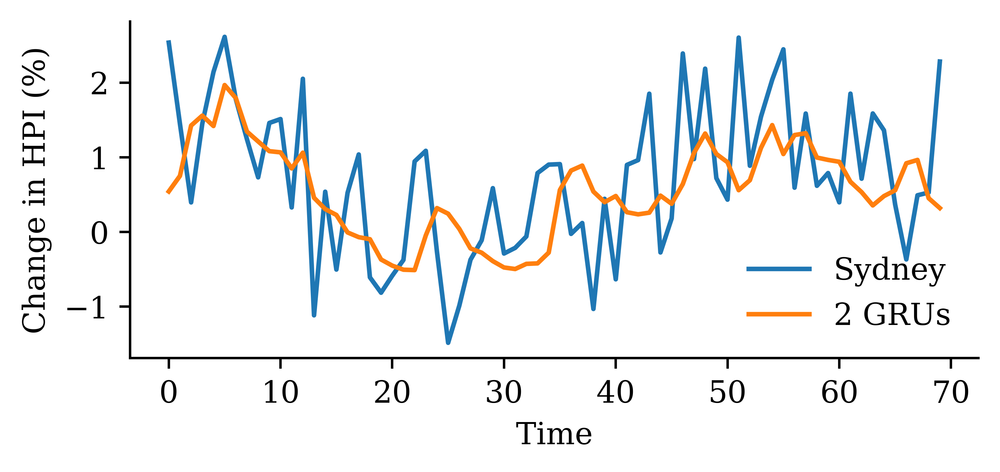

/tmp/ipykernel_3913765/1668655876.py:1: FutureWarning: The default fill_method='pad' in DataFrame.pct_change is deprecated and will be removed in a future version. Either fill in any non-leading NA values prior to calling pct_change or specify 'fill_method=None' to not fill NA values.
stocks.pct_change().plot()
# Split the data in timeX_train = df_lags.loc[:"2018"]X_val = df_lags.loc["2019"]X_test = df_lags.loc["2020":]# Remove any with NAs and split into X and yX_train = X_train.dropna()X_val = X_val.dropna()X_test = X_test.dropna()y_train = X_train.pop("T")y_val = X_val.pop("T")y_test = X_test.pop("T")
def autoregressive_forecast(model, X_val, suppress=False):""" Generate a multi-step forecast using the given model. """ multi_step = pd.Series(index=X_val.index, name="Multi Step")# Initialize the input data for forecasting input_data = X_val.iloc[0].values.reshape(1, -1)for i inrange(len(multi_step)):# Ensure input_data has the correct feature names input_df = pd.DataFrame(input_data, columns=X_val.columns)if suppress: next_value = model.predict(input_df, verbose=0)else: next_value = model.predict(input_df) multi_step.iloc[i] = next_value# Append that prediction to the input for the next forecastif i +1<len(multi_step): input_data = np.append(input_data[:, 1:], next_value).reshape(1, -1)return multi_step
“It’s tough to make predictions, especially about the future.”
Neural network forecasts
Simple feedforward neural network
model = Sequential([ Dense(64, activation="leaky_relu"), Dense(1, "softplus")])model.compile(optimizer="adam", loss="mean_squared_error")
if Path("aus_fin_fnn_model.h5").exists(): model = keras.models.load_model("aus_fin_fnn_model.h5")else: es = EarlyStopping(patience=15, restore_best_weights=True) model.fit(X_train, y_train, validation_data=(X_val, y_val), epochs=500, callbacks=[es], verbose=0) model.save("aus_fin_fnn_model.h5")model.summary()
WARNING:absl:Compiled the loaded model, but the compiled metrics have yet to be built. `model.compile_metrics` will be empty until you train or evaluate the model.
A recurrent neural network is a type of neural network that is designed to process sequences of data (e.g. time series, sentences).
A recurrent neural network is any network that contains a recurrent layer.
A recurrent layer is a layer that processes data in a sequence.
An RNN can have one or more recurrent layers.
Weights are shared over time; this allows the model to be used on arbitrary-length sequences.
Applications
Forecasting: revenue forecast, weather forecast, predict disease rate from medical history, etc.
Classification: given a time series of the activities of a visitor on a website, classify whether the visitor is a bot or a human.
Event detection: given a continuous data stream, identify the occurrence of a specific event. Example: Detect utterances like “Hey Alexa” from an audio stream.
Anomaly detection: given a continuous data stream, detect anything unusual happening. Example: Detect unusual activity on the corporate network.
Origin of the name of RNNs
A recurrence relation is an equation that expresses each element of a sequence as a function of the preceding ones. More precisely, in the case where only the immediately preceding element is involved, a recurrence relation has the form
u_n = \psi(n, u_{n-1}) \quad \text{ for } \quad n > 0.
Example: Factorial n! = n (n-1)! for n > 0 given 0! = 1.
Diagram of an RNN cell
The RNN processes each data in the sequence one by one, while keeping memory of what came before.
The following figure shows how the recurrent neural network combines an input X_l with a preprocessed state of the process A_l to produce the output O_l. RNNs have a cyclic information processing structure that enables them to pass information sequentially from previous inputs. RNNs can capture dependencies and patterns in sequential data, making them useful for analysing time series data.
Schematic of a recurrent neural network. E.g. SimpleRNN, LSTM, or GRU.
A SimpleRNN cell
Diagram of a SimpleRNN cell.
All the outputs before the final one are often discarded.
LSTM internals
Simple RNN structures encounter vanishing gradient problems, hence, struggle with learning long term dependencies. LSTM are designed to overcome this problem. LSTMs have a more complex network structure (contains more memory cells and gating mechanisms) and can better regulate the information flow.
GRU internals
GRUs are simpler compared to LSTM, hence, computationally more efficient than LSTMs.
es = EarlyStopping(patience=15, restore_best_weights=True)model.fit(X_train, y_train, validation_data=(X_val, y_val), epochs=500, callbacks=[es], verbose=0)model.summary()
WARNING:absl:Compiled the loaded model, but the compiled metrics have yet to be built. `model.compile_metrics` will be empty until you train or evaluate the model.
es = EarlyStopping(patience=15, restore_best_weights=True)model.fit(X_train, y_train, validation_data=(X_val, y_val), epochs=500, callbacks=[es], verbose=0)model.summary()
WARNING:absl:Compiled the loaded model, but the compiled metrics have yet to be built. `model.compile_metrics` will be empty until you train or evaluate the model.
At each time step, a simple Recurrent Neural Network (RNN) takes an input vector x_t, incorporate it with the information from the previous hidden state {y}_{t-1} and produces an output vector at each time step y_t. The hidden state helps the network remember the context of the previous words, enabling it to make informed predictions about what comes next in the sequence. In a simple RNN, the output at time (t-1) is the same as the hidden state at time t.
SimpleRNN (in batches)
The difference between RNN and RNNs with batch processing lies in the way how the neural network handles sequences of input data. With batch processing, the model processes multiple (b) input sequences simultaneously. The training data is grouped into batches, and the weights are updated based on the average error across the entire batch. Batch processing often results in more stable weight updates, as the model learns from a diverse set of examples in each batch, reducing the impact of noise in individual sequences.
Say we operate on batches of size b, then \boldsymbol{Y}_t \in \mathbb{R}^{b \times d}.
The main equation of a SimpleRNN, given \boldsymbol{Y}_0 = \boldsymbol{0}, is \boldsymbol{Y}_t = \psi\bigl( \boldsymbol{X}_t \boldsymbol{W}_x + \boldsymbol{Y}_{t-1} \boldsymbol{W}_y + \boldsymbol{b} \bigr) . Here,
\begin{aligned}
&\boldsymbol{X}_t \in \mathbb{R}^{b \times m}, \boldsymbol{W}_x \in \mathbb{R}^{m \times d}, \\
&\boldsymbol{Y}_{t-1} \in \mathbb{R}^{b \times d}, \boldsymbol{W}_y \in \mathbb{R}^{d \times d}, \text{ and } \boldsymbol{b} \in \mathbb{R}^{d}.
\end{aligned}
Selects the first two slices along the first dimension. Since the tensor of dimensions (4,3,2), X[:2] selects the first two slices (0 and 1) along the first dimension, and returns a sub-tensor of shape (2,3,2).
Selects the last two slices along the first dimension. The first dimension (axis=0) has size 4. Therefore, X[2:] selects the last two slices (2 and 3) along the first dimension, and returns a sub-tensor of shape (2,3,2).
1from keras.layers import SimpleRNN2random.seed(1234)3model = Sequential([SimpleRNN(output_size, activation="sigmoid")])4model.compile(loss="binary_crossentropy", metrics=["accuracy"])5hist = model.fit(X, y, epochs=500, verbose=False)6model.evaluate(X, y, verbose=False)
1
Imports the SimpleRNN layer from the Keras library
2
Sets the seed for the random number generator to ensure reproducibility
3
Defines a simple RNN with one output node and sigmoid activation function
4
Specifies binary crossentropy as the loss function (usually used in classification problems), and specifies “accuracy” as the metric to be monitored during training
5
Trains the model for 500 epochs and saves output as hist
6
Evaluates the model to obtain a value for the loss and accuracy
[8.059103012084961, 0.5]
The predicted probabilities on the training set are:
Categories of recurrent neural networks: sequence to sequence, sequence to vector, vector to sequence, encoder-decoder network.
Input and output sequences
Sequence to sequence: Useful for predicting time series such as using prices over the last N days to output the prices shifted one day into the future (i.e. from N-1 days ago to tomorrow.)
Sequence to vector: ignore all outputs in the previous time steps except for the last one. Example: give a sentiment score to a sequence of words corresponding to a movie review.
Input and output sequences
Vector to sequence: feed the network the same input vector over and over at each time step and let it output a sequence. Example: given that the input is an image, find a caption for it. The image is treated as an input vector (pixels in an image do not follow a sequence). The caption is a sequence of textual description of the image. A dataset containing images and their descriptions is the input of the RNN.
The Encoder-Decoder: The encoder is a sequence-to-vector network. The decoder is a vector-to-sequence network. Example: Feed the network a sequence in one language. Use the encoder to convert the sentence into a single vector representation. The decoder decodes this vector into the translation of the sentence in another language.
Recurrent layers can be stacked.
Deep RNN unrolled through time.
CoreLogic Hedonic Home Value Index
Australian House Price Indices
Note
I apologise in advance for not being able to share this dataset with anyone (it is not mine to share).
Keras has a built-in method for converting a time series into subsequences/chunks.
from keras.utils import timeseries_dataset_from_arrayintegers =range(10)dummy_dataset = timeseries_dataset_from_array( data=integers[:-3], targets=integers[3:], sequence_length=3, batch_size=2,)for inputs, targets in dummy_dataset:for i inrange(inputs.shape[0]):print([int(x) for x in inputs[i]], int(targets[i]))
# Num. of input time series.num_ts = changes.shape[1]# How many prev. months to use.seq_length =6# Predict the next month ahead.ahead =1# The index of the first target.delay = seq_length + ahead -1
# Which suburb to predict.target_suburb = changes["Sydney"]train_ds = timeseries_dataset_from_array( changes[:-delay], targets=target_suburb[delay:], sequence_length=seq_length, end_index=num_train,)
2025-02-24 13:45:28.815488: I tensorflow/core/framework/local_rendezvous.cc:405] Local rendezvous is aborting with status: OUT_OF_RANGE: End of sequence
2025-02-24 13:45:28.887314: I tensorflow/core/framework/local_rendezvous.cc:405] Local rendezvous is aborting with status: OUT_OF_RANGE: End of sequence
This model has 3191 parameters.
Epoch 52: early stopping
Restoring model weights from the end of the best epoch: 2.
CPU times: user 1.15 s, sys: 19.9 ms, total: 1.17 s
Wall time: 1.16 s
Plot the model
from keras.utils import plot_modelplot_model(model_dense, show_shapes=True)
Assess the fits
model_dense.evaluate(X_val, y_val, verbose=0)
1.0613856315612793
Code
y_pred = model_dense.predict(X_val, verbose=0)plt.plot(y_val, label="Sydney")plt.plot(y_pred, label="Dense")plt.xlabel("Time")plt.ylabel("Change in HPI (%)")plt.legend(frameon=False);
This model has 2951 parameters.
Epoch 54: early stopping
Restoring model weights from the end of the best epoch: 4.
CPU times: user 2.18 s, sys: 29.4 ms, total: 2.21 s
Wall time: 2.22 s
Plot the model
plot_model(model_simple, show_shapes=True)
Assess the fits
model_simple.evaluate(X_val, y_val, verbose=0)
0.9587514400482178
Code
y_pred = model_simple.predict(X_val, verbose=0)plt.plot(y_val, label="Sydney")plt.plot(y_pred, label="SimpleRNN")plt.xlabel("Time")plt.ylabel("Change in HPI (%)")plt.legend(frameon=False);
Epoch 60: early stopping
Restoring model weights from the end of the best epoch: 10.
CPU times: user 2.88 s, sys: 22.7 ms, total: 2.9 s
Wall time: 2.92 s
Assess the fits
model_lstm.evaluate(X_val, y_val, verbose=0)
0.8069359660148621
Code
y_pred = model_lstm.predict(X_val, verbose=0)plt.plot(y_val, label="Sydney")plt.plot(y_pred, label="LSTM")plt.xlabel("Time")plt.ylabel("Change in HPI (%)")plt.legend(frameon=False);
Epoch 62: early stopping
Restoring model weights from the end of the best epoch: 12.
CPU times: user 3.48 s, sys: 26.2 ms, total: 3.51 s
Wall time: 3.52 s
Assess the fits
model_gru.evaluate(X_val, y_val, verbose=0)
0.7614880204200745
Code
y_pred = model_gru.predict(X_val, verbose=0)plt.plot(y_val, label="Sydney")plt.plot(y_pred, label="GRU")plt.xlabel("Time")plt.ylabel("Change in HPI (%)")plt.legend(frameon=False);
Epoch 55: early stopping
Restoring model weights from the end of the best epoch: 5.
CPU times: user 4.99 s, sys: 31.5 ms, total: 5.02 s
Wall time: 5.04 s
Assess the fits
model_two_grus.evaluate(X_val, y_val, verbose=0)
0.7839218974113464
Code
y_pred = model_two_grus.predict(X_val, verbose=0)plt.plot(y_val, label="Sydney")plt.plot(y_pred, label="2 GRUs")plt.xlabel("Time")plt.ylabel("Change in HPI (%)")plt.legend(frameon=False);

Compare the models
Model
MSE
0
Dense
1.061386
1
SimpleRNN
0.958751
2
LSTM
0.806936
4
2 GRUs
0.783922
3
GRU
0.761488
The network with two GRU layers is the best.
model_two_grus.evaluate(test_ds, verbose=0)
2.035264730453491
Test set
Code
y_pred = model_two_grus.predict(test_ds, verbose=0)plt.plot(y_test, label="Sydney")plt.plot(y_pred, label="2 GRU")plt.xlabel("Time")plt.ylabel("Change in HPI (%)")plt.legend(frameon=False);
Predicting Multiple Time Series
Creating dataset objects
Change the targets argument to include all the suburbs.
2025-02-24 13:45:45.555142: I tensorflow/core/framework/local_rendezvous.cc:405] Local rendezvous is aborting with status: OUT_OF_RANGE: End of sequence
This model has 3317 parameters.
Epoch 72: early stopping
Restoring model weights from the end of the best epoch: 22.
CPU times: user 1.48 s, sys: 17.3 ms, total: 1.5 s
Wall time: 1.49 s
This model has 3257 parameters.
Epoch 61: early stopping
Restoring model weights from the end of the best epoch: 11.
CPU times: user 2.38 s, sys: 23 ms, total: 2.4 s
Wall time: 2.41 s
Epoch 77: early stopping
Restoring model weights from the end of the best epoch: 27.
CPU times: user 3.66 s, sys: 38.6 ms, total: 3.7 s
Wall time: 3.73 s
Epoch 82: early stopping
Restoring model weights from the end of the best epoch: 32.
CPU times: user 4.44 s, sys: 42.7 ms, total: 4.48 s
Wall time: 4.48 s
Epoch 67: early stopping
Restoring model weights from the end of the best epoch: 17.
CPU times: user 6.09 s, sys: 27.8 ms, total: 6.12 s
Wall time: 6.13 s